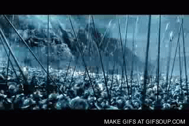

A small project in which I am attempting to design large-scale, autonomous battles. The main trade-off I have used to allow massive
battles without extreme lag is turn turn off all collisions between units. The unit prefabs do include a collider, so that they may
be picked up by Physics.2D.overlapCircleAll() (which I use for finding an enemy target) but they don;t actually collide with each other.
This means they run over each other and get packed pretty closes together, not the most realistic situation, but I think it still looks
pretty decent and battle-lie. There is also no movement or battle animation. Once I learn the basics of Unity animation, I will add
some simple animation and see how it impacts the scale I am able to achieve. Each unit includes its own code for controlling its
movement, targeting and attacks.
- the prototype can handle 200 v 200 battles before starting to lag
- sliders for choosing army mix automatically adjust to allow a maximum of 200 units per army
- I use Physics2D.OverlapCircleAll() to get enemies within visibility range and then choose the closet one using Vector3.Distance()
- a number of movement strategies are implemented, including random, march and moveWithinDistanceOfTarget
- random movement is not completely random, it includes a stride attribute which tends to keep units going in the same direction,
occasionally changing direction, for more natural looking wandering
- armies are setup at the beginning in rows of 100 units, melee in front, archers in back.....or will be once I get the kinks out

It's been a few releases of Unity since I first implemented this. Added some major performance improvements and some movement tweaks
- simply turning off all Physics2D collisions for the layers of both armies allowed me to scale up to 800 v 800 with no lag, 1200 v 1200
with a little lag, an amazing performance win even though there is no actual collision going on between units
- I tried replacing Physics2D.OverlapCircleAll() with Physics2D.OverlapCircleNonAlloc() but I didn't really see any reduction in lag
- updated "move to target" algorithm to something that moves directly towards the enemy unit rather going on a diagonal and then straight
See my code gist for details....... mvt_stayWithin()
- added small per-unit variance in movement speed, now the armies look much more natural as they charge at each other. I love when a simple
idea adds a lot of depth to what you are working on
- I need to update the sliders to handle the larger army sizes (I currently just hacked my army spawner to get bigger armies) and that will fix
the troop counters on the battle page
v.1.2 Feb 22, 2018
Big Features
- updated armySpawner with functional, if not pretty (partial rows are not centered, orcs and archers potentially mixed in center row), support
for multiple rows of each unit type
- added initSliders() in orcTeam.cs which automatically initializes the orc slider to be 75% of max army size and the archer slider to be 25%
- pushing army limit to 2000 vs 2000
- increased battlefield size to accommodate bigger armies
- added WASD camera movement
- Implemented dynamic visibility. Start with small visible ranges for units (archer = visibleRange = rangedRange = 2.0,
warrior = visibleRange = 2 * meleeRange = 0.6) and increase range by 1.0 anytime they see fewer than 5 enemies, up to a maximum visible
range of 5.0. The goal is to reduce the overhead of searching for enemies when the battle is at its largest, and gradually allow units to look
farther out for targets when the battle begins to thin out. Added a 'blooded' orc stat to prevent dynamic visibility from increasing visibility
range while units are still marching to the battle. `blooded' is set and turns on dynamic visibility once an orc has damaged someone. I had to
be fairly aggressive in increasing visibility range since looking for targets is triggered by warrior/archer_impl(), which is currently repeated
every 1.5 seconds, while moving happens continuously in update(). Get too lazy with visibility increases and the orcs walk completely out of
range before the larger visibility range can pick up anyone new.
Internal fixes, cleanups and optimizations
- got rid of 'used' field in unit in armySpawner, instead added unitType 'none' to indicate empty unit spot in army array,
this let me change armyArray from a struct array (all it contained now was unitType) to a unitType array
- Tracked down my issue with overLapCircleAll() not seeming to pick up changes in visibilityRange. The values set for orc stats in the editor
seem to override the values set when the stats are declared, so I simply deleted the initial stat values in script and went with editor values
- switched Vector3.Distance() for Vector2.Distance()
- I tried removing the rigidbody from my unit prefabs, since I don't really use them, but, if anything, it seemed to make lag worse
- Moved applyDamage() to a new script, interaction.cs, which will hold all inter-unit methods. Replaced SendMessage("applyDamage") with a
direct call to applyDamage() (after getting the component) because I read SendMessage() has horrible performance, even though my lag
when battle actually starts isn't too bad right now, it's the marching that's lagging.
- Got rid of GetComponent() calls to get script references to scripts on the same object and instead linked the scripts to a public variable
in the editor.
- removed init_archer_stats.cs and init_orc_warrior_stats.cs, moving their functionality into archer.cs and orc_warrior.cs
- I tried replacing transform.translate() inside Update() with RigidBody.MovePosition() inside FixedUpdate(). MovePosition() was only able to
handle 400 vs 400 before lagging horribly.